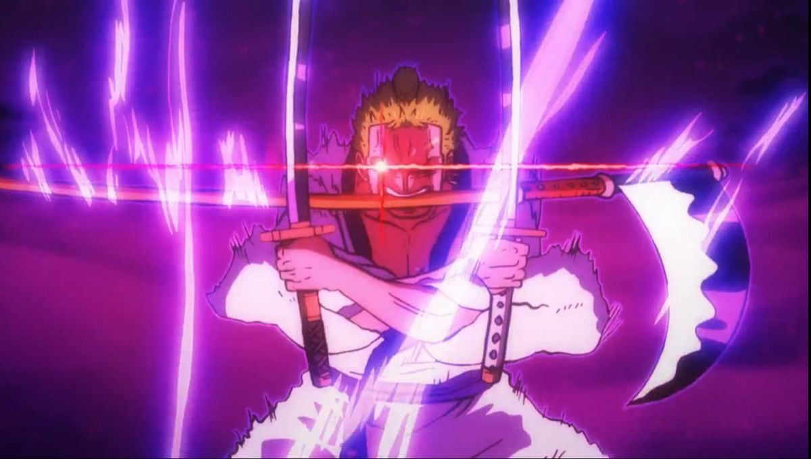

!DOCTYPE html>
<html lang="en">
<head>
    <meta charset="utf-8">
    <meta name="viewport" content="width=device-width, initial-scale=1">
    <title>Pengenalan Bootstrap</title>

    <link rel="stylesheet" href="https://cdn.jsdelivr.net/npm/bootstrap@4.5.3/dist/css/bootstrap.min.css">
    
    <script src="https://code.jquery.com/jquery-3.5.1.slim.min.js"></script>
    <script src="https://cdn.jsdelivr.net/npm/popper.js@1.16.1/dist/umd/popper.min.js"></script>
    <script src="https://cdn.jsdelivr.net/npm/bootstrap@4.5.3/dist/js/bootstrap.min.js"></script>
</head>
<body>
    <div class="container">
        <h2>Pengaturan Gambar pada Bootstrap</h2>
        <div class="row row-cols-1 text-center"> <div class="col mb-4">
                <h4>1. Rounded (Sudut Melengkung)</h4>
                
            </div>

            <div class="col mb-4">
                <h4>2. Rounded Circle (Lingkaran)</h4>
                
            </div>

            <div class="col mb-4">
                <h4>3. Thumbnail (Bingkai Foto)</h4>
                
            </div>

            <div class="col mb-4">
                <h4>4. Image Fluid (Responsif)</h4>
                <p>Coba kecilkan browser, gambar ini akan ikut mengecil.</p>
                
            </div>

        </div>
    </div>
</body>
</html>